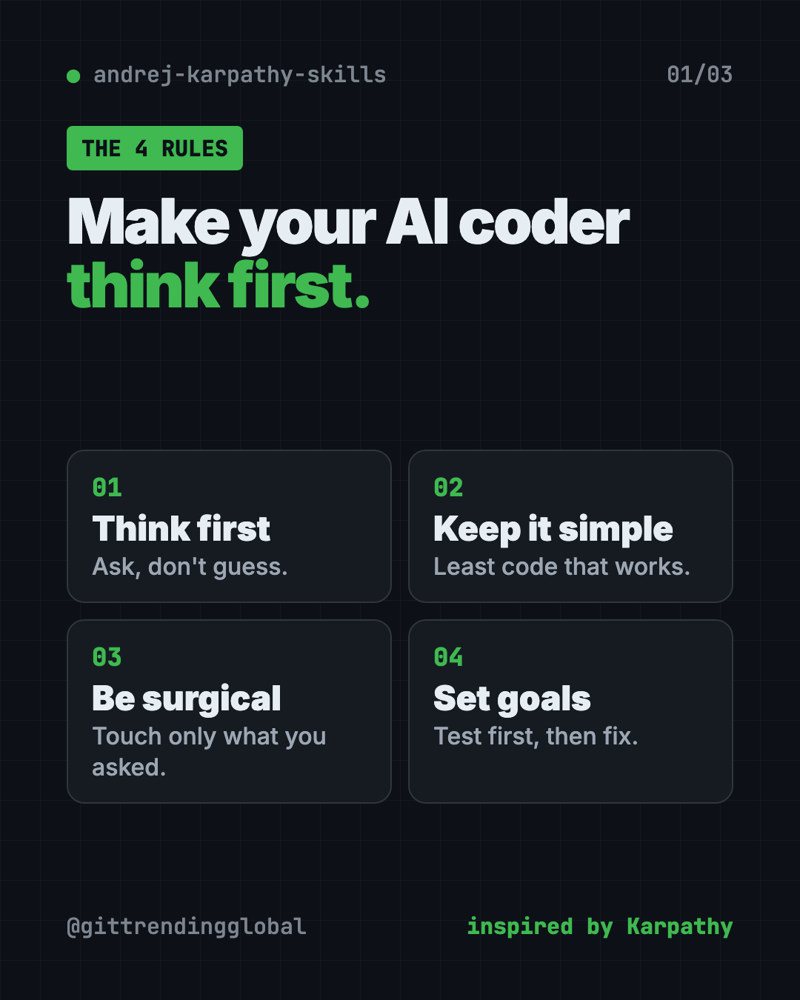
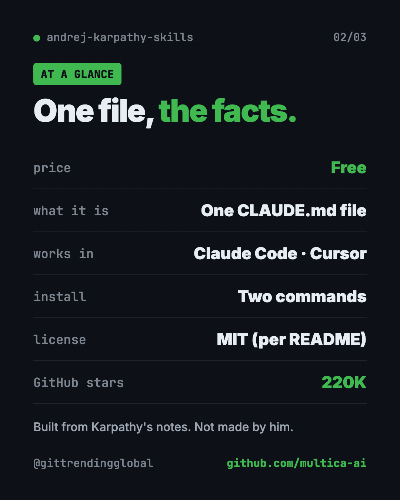
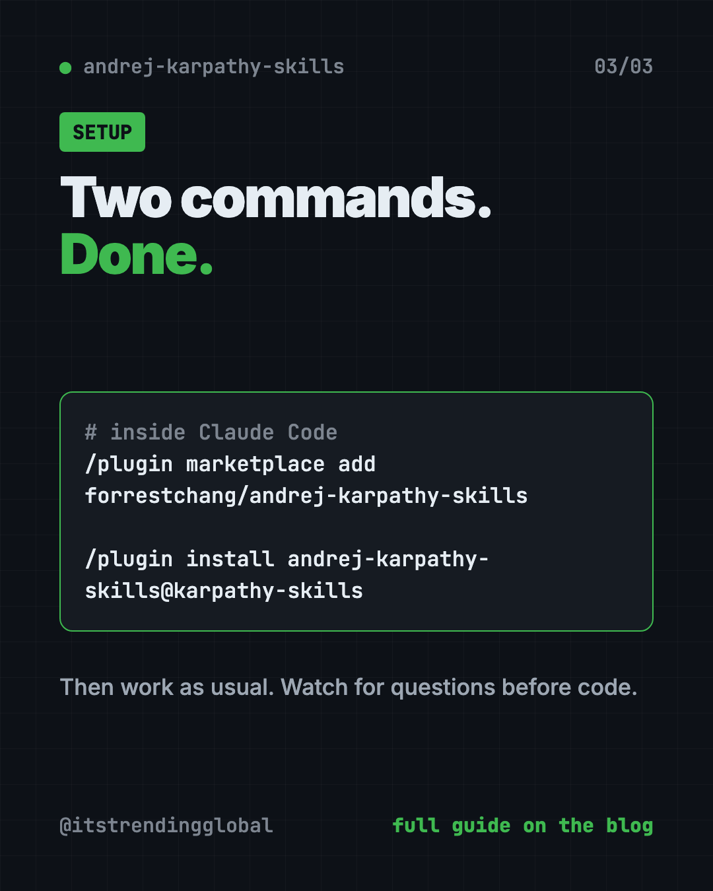
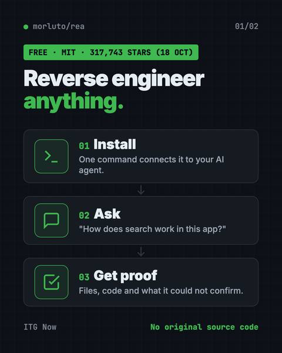

Karpathy Skills for Claude Code: One Free Rules File
- Published 15 Oct 2026
- Updated 16 Oct 2026
- 7 min read
- License MIT
- By the ITG Now team
Karpathy skills for Claude Code is one free rules file that makes your AI coder think before it acts. It asks questions instead of guessing, keeps code simple, and only changes what you asked for.
It's based on Andrej Karpathy's public notes about how AI coding tools go wrong. This guide explains the four rules, how to install them with two commands, and how to tell if they're working.
Key takeaways
- One small file, free. A single
CLAUDE.mdfile. The README lists the license as MIT. - Inspired by Karpathy, not made by him. The author turned his observations into rules.
- Four rules: think before coding, keep it simple, make surgical changes, work toward checkable goals.
- Works in Claude Code and Cursor. Install as a plugin, or drop the file into one project.
- About 220K GitHub stars. One of the most starred Claude Code add-ons.
What are the Karpathy skills?
It's a single instruction file called CLAUDE.md. Claude Code, Anthropic's AI coding tool, reads this file at the start of each session and follows it. Think of it as a short house-rules sheet for your AI helper.
Andrej Karpathy is a well-known AI researcher. He wrote about the bad habits of AI coding tools. The README quotes him saying the models "make wrong assumptions on your behalf and just run along with them without checking."
He also said they love to overcomplicate code. And sometimes they change or delete things they don't fully understand, even when that has nothing to do with the task.
This project turns those complaints into four rules your AI can follow.

What are the four rules?
1. Think before coding. Don't assume. Don't hide confusion. The AI should say its guesses out loud, ask when unsure, and offer options when a request could mean two things. If there's a simpler way, it should say so.
2. Simplicity first. Write the least code that solves the problem. No extra features. No "just in case" settings. The README's test: would a senior engineer call this overcomplicated? If yes, simplify.
3. Surgical changes. Touch only what you must. Don't "improve" nearby code or reformat things. If the AI spots unrelated old code, it should mention it, not delete it. Every changed line should trace back to your request.
4. Goal-driven work. Turn vague asks into goals you can check. "Fix the bug" becomes "write a test that shows the bug, then make it pass." For bigger jobs, the AI writes a short plan with a check after each step.
How to use Karpathy skills (real examples)
- Ask for a small fix. You ask to change a button's color. Without the rules, some AI tools rewrite the whole page. With them, it should change the color and stop.
- Give a fuzzy request. You say "make the signup better." The AI should ask what "better" means before it starts, instead of guessing.
- Fix a bug for good. The AI writes a test that shows the bug first, then fixes it. Now you know it's fixed.
- Review AI work faster. Smaller, cleaner changes mean less to read before you approve them.
- Mix in your own rules. Add lines like "use TypeScript strict mode" below the Karpathy rules in the same file.
💡 Tip: The README says these rules favor care over speed. For a tiny typo fix, it's fine to tell the AI to just do it.
How do you know it's working?
The README lists four signs:
- Fewer surprise changes. Only what you asked for shows up.
- Fewer rewrites. The code is simple the first time.
- Questions come first. The AI asks before building, not after a mistake.
- Clean, small updates. No "while I was here" extras.
Is it free?
Yes. The file is free. The README lists the license as MIT, which means you can use and change it, even at work.
You still need Claude Code or Cursor, and those may cost money. The file itself is just text. It doesn't send anything anywhere.
Karpathy skills at a glance
| Price | Free |
| Works offline | It's a text file; your AI tool still needs internet |
| Platforms | Claude Code (plugin or file), Cursor (rule file) |
| License | MIT, per the README |
| GitHub stars | About 220K |
| Install time | Two commands |
| Best for | Anyone whose AI coder keeps doing too much |

How to install Karpathy skills for Claude Code
You need Claude Code installed and working first. The README gives two options.
Option A: Plugin (recommended)
This makes the rules work in all your projects. Inside Claude Code, copy and paste this to add the plugin source:
/plugin marketplace add forrestchang/andrej-karpathy-skills
Then copy and paste this to install it:
/plugin install andrej-karpathy-skills@karpathy-skills
Option B: One project only
Open Terminal in your project folder. For a new project, copy and paste this:
curl -o CLAUDE.md https://raw.githubusercontent.com/forrestchang/andrej-karpathy-skills/main/CLAUDE.md
Already have a CLAUDE.md? Copy and paste this instead, so the rules get added to the end and nothing is replaced:
echo "" >> CLAUDE.md
curl https://raw.githubusercontent.com/forrestchang/andrej-karpathy-skills/main/CLAUDE.md >> CLAUDE.md
⚠️ Heads up: The install commands point to
forrestchang/andrej-karpathy-skills, while the repo now lives atmultica-ai/andrej-karpathy-skills. That's what the README says to use. We checked on October 16, 2026: the old address forwards to the new one, and the file downloads fine.
Using Cursor? The repo includes a ready Cursor rule file. Its CURSOR.md guide explains the setup.
Let Claude or Codex set it up for you
Claude Code and OpenAI Codex are AI helpers that run in your Terminal. They can do setup steps for you while you approve each one.
Copy and paste this:
Please add the Karpathy coding rules from github.com/multica-ai/andrej-karpathy-skills to this project.
1. Read the README first.
2. If I already have a CLAUDE.md, add the rules to the end. Don't replace anything.
3. If I don't, create one with the rules.
4. Show me the four rules in plain English when you're done.
Then try asking:
Following the Karpathy rules, what questions do you have before you change my signup page?
Fix this bug the goal-driven way: write a test that shows it first, then make it pass.
Review your last change. Did you touch anything I didn't ask for?

Our take
This is the easiest upgrade you can give an AI coder. One file, two commands, and it pushes the AI toward asking first and doing less.
What we like:
- Tiny and free. You can read the whole thing in a few minutes.
- Fixes the most common AI coding complaints head on.
- Plays well with your own project rules.
- Works in Claude Code and Cursor.
What to watch for:
- It's guidance, not a guarantee. The AI can still slip.
- It favors care over speed, which can feel slow on tiny tasks.
- GitHub doesn't detect a license file, though the README says MIT.
- The repo hasn't changed much since April 2026.
Like this style? Matt Pocock skills add commands like /grill-me that make your AI ask questions first. Ponytail pushes AI toward less code. And Karpathy's own autoresearch lets AI run experiments overnight. This repo also made our top 5 GitHub repos of April 2026.
FAQ
Did Andrej Karpathy make this?
No. It's inspired by his public posts about AI coding mistakes. The rules were written by the project's author.
What is a CLAUDE.md file?
It's a text file Claude Code reads at the start of every session. Whatever rules are inside, the AI tries to follow.
Do Karpathy skills work with Cursor?
Yes. The repo includes a Cursor rule file, plus a CURSOR.md guide for setup.
Will this slow my AI down?
A little, on purpose. The README says the rules favor care over speed. For tiny fixes, use your judgment.
Is it free?
Yes. The file is free, and the README lists the license as MIT. Your AI coding tool may cost money.
Get Karpathy skills: github.com/multica-ai/andrej-karpathy-skills
More free coding tools
- Hindsight Hindsight is free, open-source AI agent memory. It helps AI helpers remember past chats and learn from them. Works with Claude Code, Codex and 60+ tools.
- Ponytail Skill The Ponytail skill is one free prompt that makes your AI coding helper reuse what exists, write half the code, and still keep the tests and safety checks.
- Understand Anything Understand Anything is a free plugin that lets you visualize any codebase as a clickable map with plain-English notes, guided tours and a chat for questions.
- Matt Pocock Skills Matt Pocock skills are free add-ons that make Claude Code, Codex and Copilot ask better questions, test their work and keep your code tidy.
- CodeGraph for Claude Code CodeGraph for Claude Code builds a local map of your code, so your AI helper finds the right files in one step. Free, MIT licensed, runs on your computer.
- Caveman Caveman is a free add-on to reduce Claude Code token usage. Your AI helper gives short answers and reads less noise, so each session costs less.
Latest AI news
- Meta gives away its big Muse Spark AI for free
- DeepSeek raises about $15 billion in funding round
- Google likely to face ex-NPR host's AI voice suit
- Blackstone says AI data-center debt fears overblown
Keep reading

REA: Reverse Engineer Anything With Your AI Agent
REA (Reverse Engineer Anything) lets an AI agent look inside an app and explain how a feature works, with proof. What it does, what it misses, and the risks.